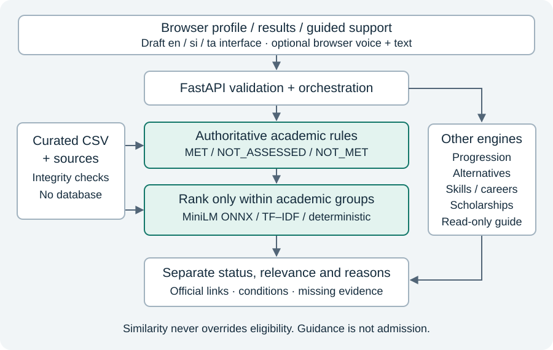

University of West London
Official poster format pending
Evidence: 29 October 2026
WiseLanka
Policy-aware education and career guidance.
Academic evidence first. AI relevance kept separate.
01 · Problem & aim
How can an AI-powered, policy-aware Education and Career Pathway Intelligence System support Sri Lankan learners through personalised, explainable, and accessible pathway recommendations?
Design, develop and evaluate personalised, explainable and accessible AI-powered, policy-aware guidance for Sri Lankan learners.
02 · Curated educational knowledge
IT:7 · Business:1 · Engineering:3
Five conditional/non-guaranteed progression relationships.
CSV records retain source links, conditions and verification dates. Reported qualifications do not establish equivalence.
03 · Research method
DSR with iterative prototyping: construct → demonstrate → evaluate → refine.
Source review found omitted UGC conditions. Corrections retain NOT_ASSESSED until unresolved evidence is verified.
04 · Hybrid architecture

One modular FastAPI application; local inference, curated CSV knowledge and an existing web interface.
05 · Relevance without policy override
- Rules establish academic assessment groups.
- Frozen MiniLM ONNX ranks within groups.
- TF–IDF and deterministic orders provide comparisons.
- Facts, scores and official links remain distinct.
No automatic feedback learning.
06 · Measured technical evidence
Five live workflows ·14 synthetic reference cases passed ·CSV integrity and fresh installation passed.
Nine synthetic ranker comparisons; independent relevance labels unavailable.
0.29s model load ·15ms warm in-process p95 ·302MiB whole-process peak RSS.
Single Mac, sequential local requests; not production throughput or isolated model memory.
07 · Access & interaction
Guided support ·draft en/si/ta controls ·optional browser voice with text fallback.
Zero automated violations in nine scanned states. This is not WCAG conformance certification.
08 · Limits & next evaluation
Small uneven catalogue. Adult usability, independent relevance/source review, fluent translation and native speech/manual accessibility checks remain pending.
No learner-outcome, satisfaction or ranking-quality improvement is claimed.